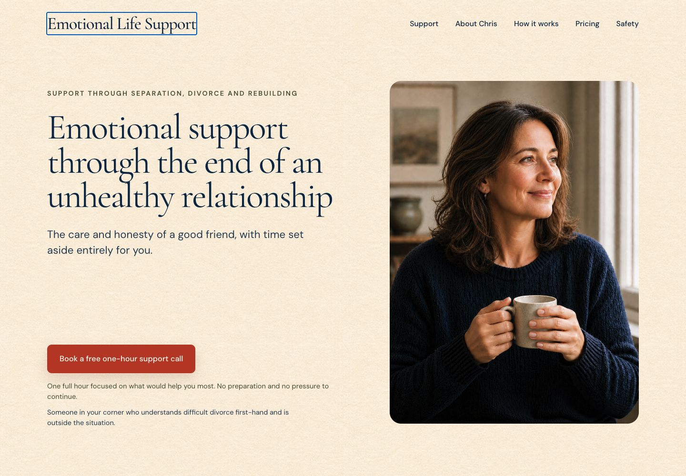
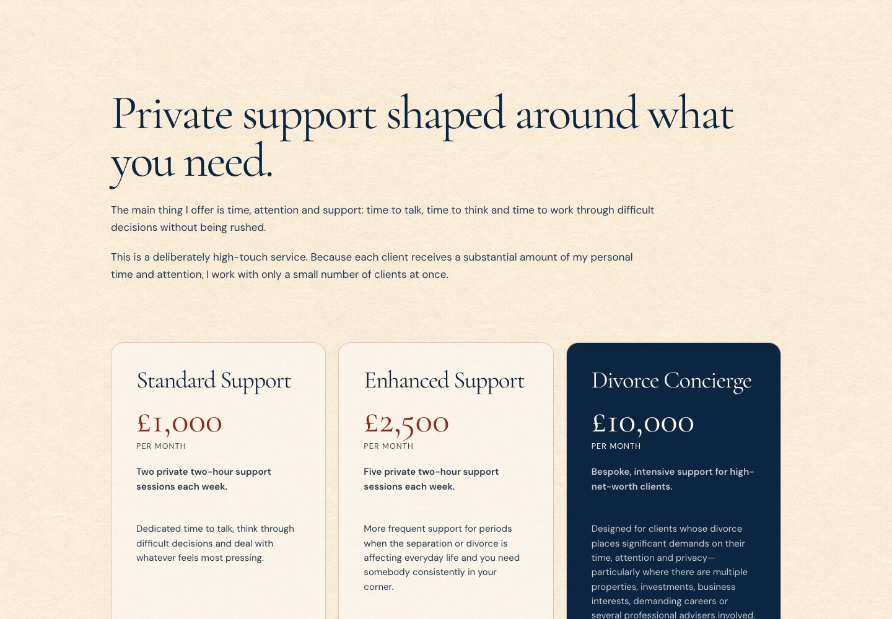
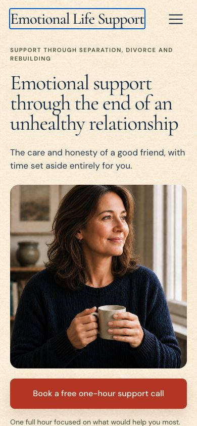
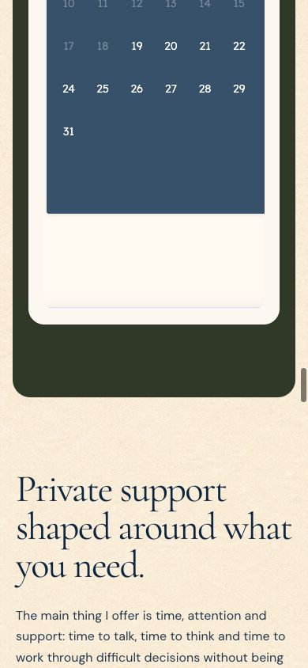

Three visual directions
Illustrative mockups based on the captured site. They show clusters of ideas, not final production designs.


26 recommendations
High-impact items should be considered first. “Quick win” means the change is likely small relative to its visible benefit.
Your decisions
This summary updates automatically. Copy it and paste it back into our conversation.
Captured evidence
These are current-site screenshots captured during this audit, not mockups.



